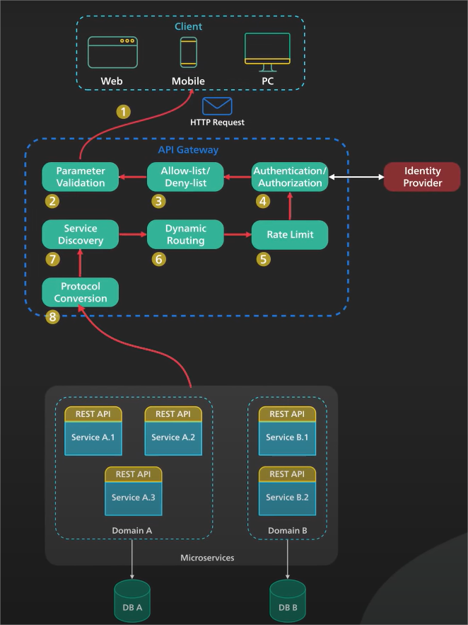

Introduction
An API Gateway is a single point of entry to the clients of an application. Its sits between the clients and the collection of backend services for the application.

An API Gateway typically provides several important functions, Some commonly ones are :
API Gateway Flow
Step 1 : Client sends request to API Gateway which is typically HTTP based it can be REST API or GraphQL etc.
Step 2 : API Gateway validates HTTP Request
Step 3 : API Gateway checks IP Address. It can also perform rate limit check such as IP Address and HTTP Headers.
Step 4 : API Request is passes to identity provider for authentication and authorization.
Step 5 : Hight level Rate limit check is applied against authenticated session, over the limit the request is rejected at this point.
Step 6 : With the help of discovery component , API Gateway locates backend service to handle the request by path matching.
Step 7 : API Gateway transform api request into protocol and sends api request to backend service , protocol could be gopc
Step 8 : When the response came from backend service , API Gateway transform response back to public facing protocol and returns response to client
The API Gateway also provide othe critical service such as error handling and circuit break.
What are the key features of an API Gateway?
These features collectively make an API Gateway a powerful tool for managing the complexities of a distributed system.
Conclusion :
An API Gateway is a critical piece of the infrastructure, it should be deployed to multiple regions to improve availability. Additionally, it acts as a single entry point for all client requests, managing traffic, authentication, and throttling, which enhances security and performance.